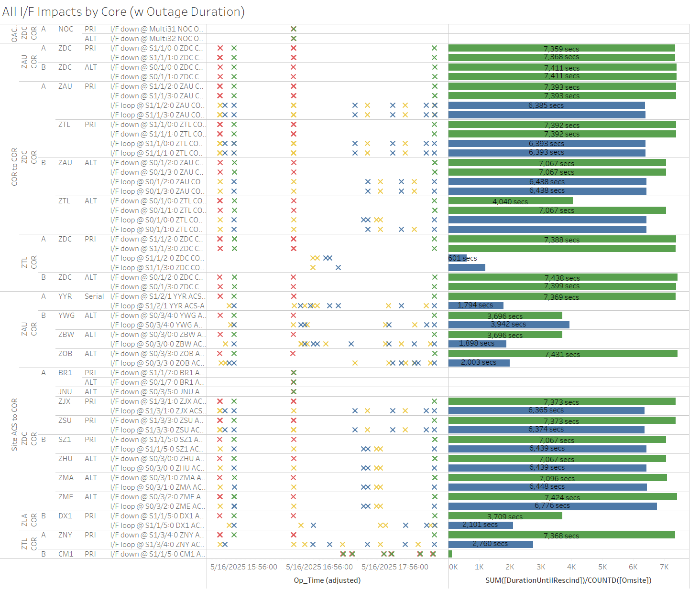
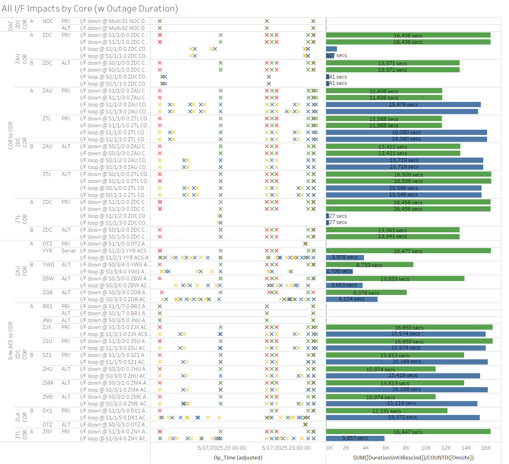
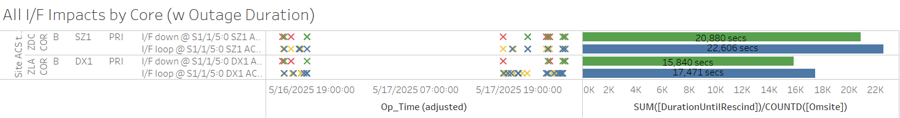
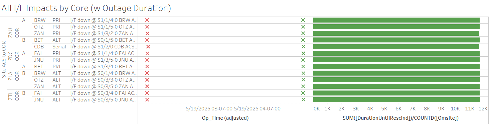
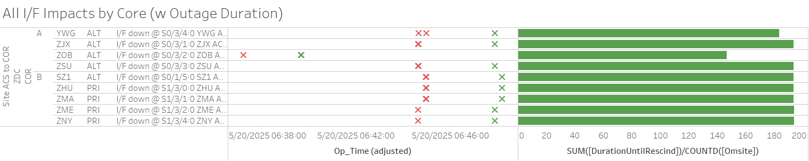

Weekly Highlights 20250514-20250521
5/9-5/16 - ZKC PCU-B Comm Fault
- 5/9 03:00 - ZKC PCU-B comm fault...
- 5/14 18:48 - ZKC WRE-B to Maintenance Mode to
address PCU-B Comm Fault from 5/9; could not
clear comm fault issue with PCU, so replaced
with spare; could not configure
spare -- ref LAD
981489124; additional spare to be
ordered...
- 5/14 19:35 - ZKC WRE-B Shutdown...
- 5/16 15:39 - ZKC WRE-B PCU successfully configured; restored to Normal at 5/16 16:14
5/14-5/21 WRE + L1/L2 Bias Alarms
- 5/14 03:05 - MTP WRE-A and C alarmed with SE 729 WRE Bias Err for all C&Vs...
- 5/14 18:40 - MPR L1/L2 Bias Alarm
- 5/14 19:25 - MSD L1/L2 Bias Alarm
- 5/15 15:12 - MSD L1/L2 Bias Alarm
- 5/15 15:15 - MMD L1/L2 Bias Alarm
- 5/16 02:51 - MTP WRE Bias Alarm
- 5/16 07:08 - MPR L1/L2 Bias Alarm
- 5/16 17:40 - YYR L1/L2 Bias Alarm
- 5/17 02:45 - MTP WRE Bias Alarm
- 5/17 22:05 - MPR L1/L2 Bias Alarm
- 5/17 23:56 - YYR L1/L2 Bias Alarm
- 5/18 02:43 - MTP WRE Bias Alarm
- 5/19 02:40 - MTP WRE Bias Alarm
- 5/20 02:38 - MTP WRE Bias Alarm
5/13-5/14 - ZKC WRE-A/C Impacted by Power Panel Work
- 5/13 04:32 - ZKC WRE-A to Maintenance and Shutdown
for pwr panel maint (ASCO switch repl)@0500Z.-- ref LIR 975993924; restored to Normal at 5/13 08:19 - 5/14 04:39 - ZKC WRE-C to Maintenance and Shutdown
for pwr panel maint (ASCO switch repl)@0500Z.-- ref LIR 975982224; restored to Normal at 5/14 09:24
5/14-5/19 - ZFW PCU-C Comm Fault
- 5/14 01:30 - ZFW PCU-C reports SE 255 Comm
Fault...
- 5/14 03:56 - ZFW Ring 1 PRI / ALT
comms down hard due to Control Power
on ZFW ACS-A Router
Performing WRS0018-- ref LIR 983646224; comms restored at 5/14 04:02 (~343 seconds) but PCU-C SE 255 still remains...
- 5/14 03:56 - ZFW Ring 1 PRI / ALT
comms down hard due to Control Power
on ZFW ACS-A Router
- 5/14 13:59 - ZFW WRE-C Faulted with SE 54 - Rcvr Comm Fault...
- 5/14 15:04 - ZFW WRE-C placed in Verification then dropped back to Maintenance at 5/14 15:07; left in Maintenance...
- 5/15 14:02 - ZFW WRE-C restored to Normal
- 5/19 19:04 - ZFW WRE-C Shutdown to replace PCU-C; restored to Normal at 5/19 21:48
5/14 - MTP Ring 1 Comms Transitioned to Ethernet
- 5/14 16:19 - MTP Ring 1 comms down hard for Serial disconnect; line transitioned to Ethernet and cleared at 5/14 16:29
5/16-5/17 - ZDC Comms Impacted by FTI Activities
- 5/16 15:36 - ZDC Core comms interrupted and
multiple comms impacted due to
high tier WAVE tkt.-- ref LIR 984816124; all lines cleared at 5/16 15:48 (~675 seconds)- 5/16 16:34 - ZDC Core comms
interrupted and multiple comms
impacted due to
high tier WAVE tkt.; all lines cleared at 5/16 18:27 (~6744 seconds)
- 5/16 16:34 - ZDC Core comms
interrupted and multiple comms
impacted due to

- 5/17 17:06 - ZDC Core comms interrupted and
multiple comms impacted due to
high tier WAVE tkt.-- ref LIR 985299924; all lines cleared at 5/17 19:56 (~10203 seconds)- 5/17 22:05 - ZDC Core comms
interrupted and multiple comms
impacted due to
high tier WAVE tkt.; all lines cleared at 5/18 00:23 (~6500 seconds total)
- 5/17 22:05 - ZDC Core comms
interrupted and multiple comms
impacted due to

5/16-5/18 - DX1 + SZ1 Comm Impacts
- 5/16 15:36 - DX1 Ring 2 PRI + SZ1 Ring 2 PRI comms down hard then looped; both lines cleared at 5/16 15:47 (~671 seconds)
- 5/16 16:34 - DX1 Ring 2 PRI + SZ1 Ring 2 PRI comms down hard then looped; both lines cleared at 5/16 18:27 (~6746 seconds)
- 5/17 17:06 - DX1 Ring 2 PRI + SZ1 Ring 2 PRI comms down hard then looped; both lines cleared at 5/17 22:19 (~18803 seconds)
- 5/17 22:32 - DX1 Ring 2 PRI + SZ1 Ring 2 PRI comms down hard then looped; both lines cleared at 5/18 00:01 (~5347 seconds)

5/20 - BR2 GUS Maintenance
- 5/20 15:57 - BR2 GUS to Maintenance for
swapping out L-Band Phased-Array Antenna due to abnormal C/No fluctuations-- ref LIR 983415124; restored to Backup at 5/20 17:46
Various Comm Impacts
* Only captures major / long-term comm outages
CM1 Comms
- 5/14 16:45 - CM1 Ring 2 PRI comms flapping; last event cleared at 5/14 22:17 (~1436 seconds total)
- 5/16 17:14 - CM1 Ring 2 PRI comms flapping; last event cleared at 5/16 20:00 (~181 seconds total)
- 5/19 17:46 - CM1 Ring 2 PRI comms flapping; line cleared at 5/19 23:24 (~1011 seconds total)
- 5/20 16:17 - CM1 Ring 2 PRI comms flapping; line cleared at 5/20 22:49 (~773 seconds total)
- 5/21 17:26 - CM1 Ring 2 PRI comms flapping...
BRW / BET Comms
- 5/14 12:18 - BRW Ring 1 PRI / Ring 2 ALT comms flapping until down hard at 5/14 12:32; both lines cleared at 5/14 13:51 (~4712 seconds)
- 5/14 12:35 - BET Ring 1 PRI / Ring 2 ALT comms flapping until down hard at 5/14 12:50; both lines cleared at 5/14 13:51 (~3669 seconds)
- 5/15 12:34 - BRW Ring 1 PRI / Ring 2 ALT comms flapping until down hard at 5/15 12:46; both lines cleared at 5/15 14:01 (~4395 seconds)
- 5/15 12:46 - BET Ring 1 PRI / Ring 2 ALT comms flapping until down hard at 5/15 12:55; both lines cleared at 5/15 14:01 (~3968 seconds)
- 5/15 20:09 - BRW Ring 1 PRI / Ring 2 ALT comms down hard; both lines cleared at 5/16 02:42 (~23539 seconds)
- 5/17 12:48 - BET Ring 1 PRI / Ring 2 ALT comms flapping until down hard at 5/17 12:59; both lines cleared at 5/17 13:44 (~2674 seconds)
- 5/18 11:27 - BET Ring 1 PRI / Ring 2 ALT comms flapping until down hard at 5/18 11:34; both lines cleared at 5/18 12:54 (~4785 seconds)
- 5/19 10:06 - BET Ring 1 PRI / Ring 2 ALT comms flapping until down hard at 5/19 10:13; both lines cleared at 5/19 10:44 (~1883 seconds)
- 5/19 14:48 - BET Ring 1 PRI / Ring 2 ALT comms flapping; last events cleared at 5/19 16:15 (~4219 seconds total)
- 5/19 20:44 - BET Ring 1 PRI / Ring 2 ALT comms flapping until down hard at 5/19 20:54; both lines cleared at 5/19 22:31 (~5847 seconds)
- 5/20 13:21 - BET Ring 1 PRI / Ring 2 ALT comms flapping until down hard at 5/20 13:38; both lines cleared at 5/20 14:43 (~3851 seconds)
- 5/20 18:25 - BET Ring 1 PRI / Ring 2 ALT comms down hard; both lines cleared at 5/20 21:13 (~10070 seconds)
- 5/20 23:44 - BET Ring 1 PRI / Ring 2 ALT comms down hard; both lines cleared at 5/20 23:46 (~171 seconds)
- 5/20 23:48 - BRW Ring 1 PRI / Ring 2 ALT comms down hard; both lines cleared at 5/21 00:00 (~708 seconds)
Other Sites
- 5/14 06:09 - MTP Ring 1 comms down hard; line cleared at 5/14 08:39 (~2h 29m)
- 5/14 07:06 - OTZ Ring 1 PRI / Ring 2 ALT comms down hard; both lines cleared at 5/14 08:46 (~6014 seconds)
- 5/16 22:31 - YQX Ring 1 PRI comms down hard; line cleared at 5/17 01:19 (~10066 seconds)
- 5/18 00:15 - ZOB Ring 2 ALT comms down hard; line cleared at 5/18 01:01 (~2809 seconds)
- 5/18 23:52 - OTZ Ring 1 PRI / Ring 2 ALT comms down hard; both lines cleared at 5/18 23:54 (~84 seconds)
- 5/19 01:49 - Multiple comms to Alaska down hard
for
ISR 0519-0111 ZLA Multi Net1/Net2 to Alaska OTS-- ref LIR 986018924; all lines cleared at 5/19 05:04 (~11730 seconds)

- 5/20 06:37 - ZOB Ring 1 ALT comms down hard; line cleared at 5/20 06:39 (~146 seconds)
- 5/20 06:44 - Multiple ZDC comms impacted; all lines cleared by 5/20 06:48 (~193 seconds)

- 5/20 14:10 - YQX Ring 1 PRI comms down hard; line cleared at 5/21 20:37 (~109583 seconds)
- 5/20 20:19 - MPR Ring 1 comms down hard due to Ethernet transition test; test failed, and reconnect requested; cable reconnected at 5/21 17:43 (~21h 23m)
- 5/21 20:07 - ZDV Ring 2 ALT / Ring 1 PRI comms flapping...
Mexico Ring 2 Down Hard...
- Targeting network upgrade in CY26
YFB Ring 2 Down Hard...
YFB requires satcom upgrades by NavCanada to restore... ref LIR 892056924
- 11/6/24 18:48 - YFB Ring 2 down hard... both rings to YFB down hard...
List of current offline WREs
List of current offline WREs -- ref WAAS Status Monitor
All Depot shipments to Mexico are halted until the customs process can be finalized
- MMD WRE-A - 3/31/25-... - Freq Std failed -- ref LIR 953873324
- MTP WRE-B - 11/18/24-... - Receiver inits failing -- ref LIR 898330924
- MMX WRE-A - 10/13/24-... - Freq Std failed -- ref LAD 879853824
- MMX WRE-C - 5/15/24-... - Processor failed and could not be restored -- ref LIR 798352224
- MPR WRE-B - 5/3/24-... - Inits failing -- looks like a bad freq std; due to shipping issues, there is no spare Freq Std and no ETA to recover WRE-B... -- ref LIR 44170821
5/11/23-... - MX Ring 2 Satcom Upgrade
- 5/11/23 17:01 - MX Ring 2 SatCom upgrade begins; MX Ring 2 OFFLINE until upgrade troubleshooting is complete
All sites are currently connected through Tijuana with new cables; but still large UDP data packets (WAAS Multicast) being dropped on Ring 2 -- no further actions to take at Tijuana
- All MX Ring 2 currently down with no ETA...
-
WAAS Second Level assessing situation before further troubleshooting...

Major Events


Core I/F Status

Comm Events

Mexico Comm Status